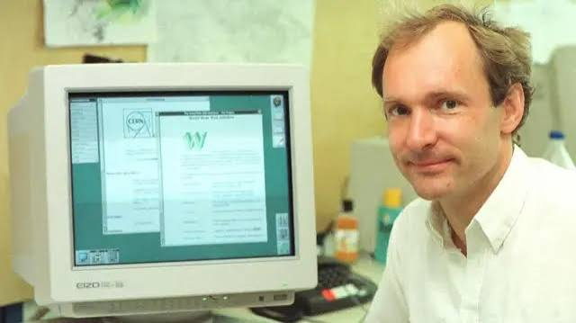

¿Qué es Internet?
Internet es una red global que conecta millones de dispositivos en todo el mundo. Ha transformado la forma en que nos comunicamos, aprendemos y trabajamos.
Descubre cómo la web ha cambiado nuestra vida
Internet es una red global que conecta millones de dispositivos en todo el mundo. Ha transformado la forma en que nos comunicamos, aprendemos y trabajamos.
Creador de la World Wide Web.

Padre del Internet, desarrolló el protocolo TCP/IP.